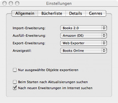

Main Preferences
This tab allows you to set some application-wide preferences, such as preferred plugins.

Import Plugin
Selects the default plugin used to import data into Books.
Default Quickfill Plugin
Selects the default data service that Quickfill uses to find more details about your books.
Export plugin
Selects the default plugin used to export and share your Books information in other formats.
Default Display Style
Selects the default display style used to display information about individual book records.
"Only export selected items"
This allows you to specify whether Books should export all of your records when an export is invoked, or whether it should only export those records that are visible in the upper-right portion of the main window.
"Look for updates at launch"
Checking this will allow Books to go online and find new versions of itself when you start the program. If you experience long startup times when launching Books, uncheck this box to turn off the automatic updating.
"Look for new plugins online"
Check this box if you'd like Books to find new and updated plugins when you use the Plugin Manager. If this box is unchecked, you will need to manually refresh the list when needed.